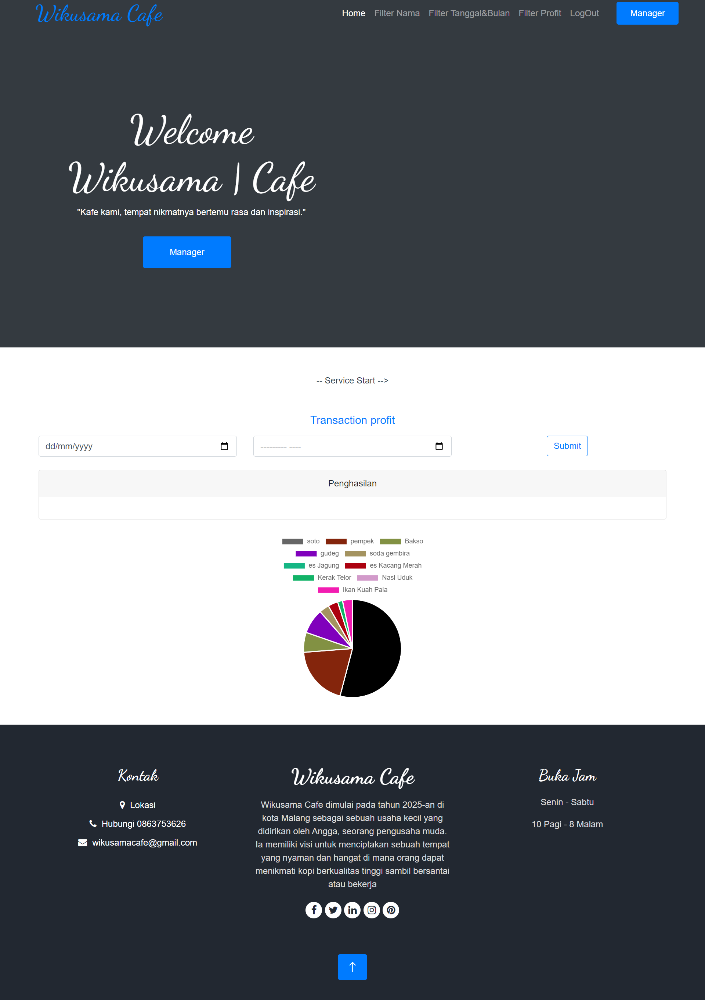
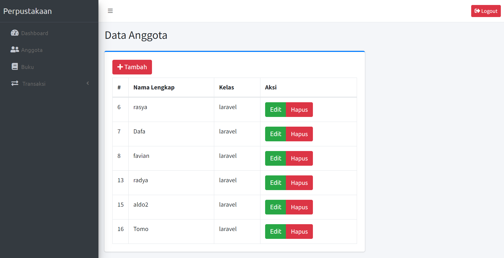

Project Cafe
Wikusama Cafe membuat sistem kasir. Sistem terdiri dari 3 jenis user yaitu kasir,
manajer dan admin. Kasir akan melayani pemesanan dan memberikan nomor meja sebagai
identitas untuk memudahkan pelayan mengantarkan pesanan.
Pelanggan akan membayar di kasir sebelum meninggalkan cafe. Cafe hanya menerima
pembayaran secara tunai.
Jika pelanggan memesan makanan/minuman tambahan, pelanggan harus menuju ke kasir dan
kasir dapat menambahkan data pemesanan.
Manajer Cafe bertugas untuk memonitoring data transaksi

Project Perpustakaan
Perpustakaan membuat sistem kasir. Sistem terdiri dari 1 jenis user yaitu Admin.
Admin dapat menambahkan data user yang digunakan sebagai sarana pinjam meminjam buku dan
admin juga dapat menambahkan buku yang ada di Perpustakaan.admin dalam proses transaksi dapat
menentukan user meminjam dalam waktu tertentu sesuai kesepakatan dan apabila melewati tanggal
tersebut akan ditetapkan sanksi berupa denda dengan sejumlah nominal tertentu.


Project Toko Online
Perpustakaan membuat sistem kasir. Sistem terdiri dari 2 jenis user yaitu Admin dan pelanggan.
Admin dapat menambahkan data user yang digunakan sebagai sarana jual beli di toko online ini dan
admin juga dapat menambahkan item yang akan dijual pada toko online.Pelanggan juga dapat sign up akun sendiri.
proses transaksi sendiri seperti transaksi toko online pada umunmya bahkan menggunakan simulasi uang asli dengan menggunakan mitrands